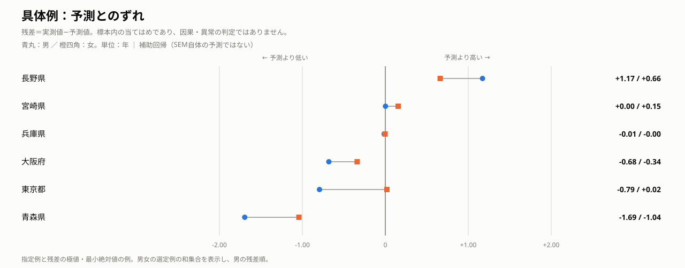
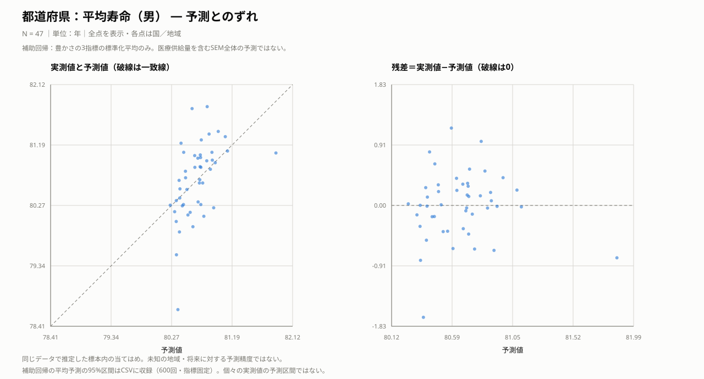
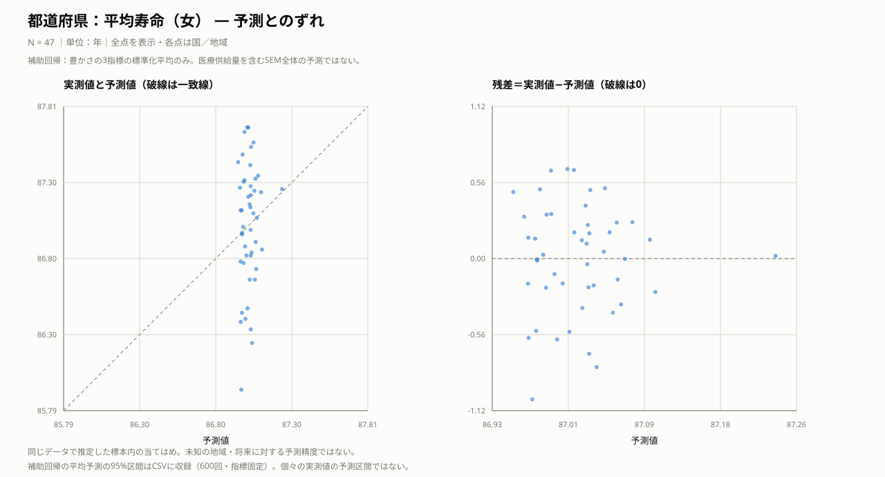
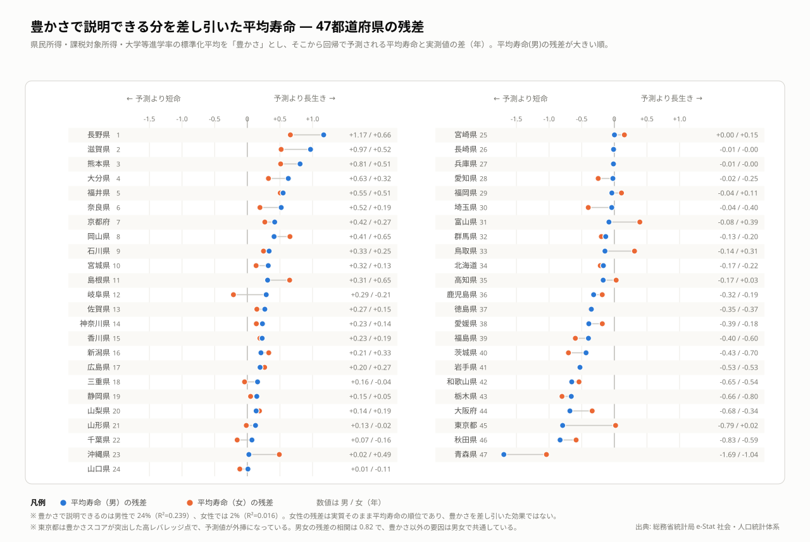

都道府県の健康 — 豊かさと寿命の関連を男女別に比較
経済的に豊かな県ほど、男性の平均寿命が長く、人口当たりの病床・看護師・病院が少ないという関連が見られました。女性の平均寿命との関連と、医療供給量から寿命への効果は明確に示せませんでした。男女の係数差は、下記の追加検証で直接比較しています。
分析手法：構造方程式モデリング（SEM）
結果を図で見る


考察
豊かな県ほど男性の平均寿命が長い一方、人口当たりの病床・看護師・病院は少ないという関係が見られました。この2つの関係は、県を1つずつ除いても符号が変わりませんでした。豊かさと医療供給量が同じ方向に並ばないことから、地域の健康を考える際には、経済条件と医療の量を分けて捉える必要があります。医療供給量から寿命への効果は示せませんでしたが、供給量だけでは医療の質や必要性を表し切れないため、医療が役立たないという意味ではありません。
豊かさだけを使った補助回帰では、予測からのずれが男女で似ていました。これは、その回帰では捉えていない共通の地域要因を考える手掛かりですが、原因を特定した結果ではありません。また、女性で豊かさとの関連を検出できなかったことも、女性への効果がないことや、男女の効果が異なることの証明にはなりません。そこで、下記の追加検証では同じ標本内の係数差を直接比較しました。
分析の過程では、国と都道府県で相関が違う理由を集計単位の違いと解釈しかけました。しかし、所得の範囲をそろえると国でも相関が弱まり、その説明は撤回しました。比較する地域のばらつきが結論を左右するという教訓です。今後は過去の地域条件と後年の寿命を組み合わせ、生活習慣や医療へのアクセスなども事前に定義して検証することで、今回残った問いを絞り込めます。
予測とのずれ
主要な国・地域の具体例
主要国・身近な地域をあらかじめ指定し、それに加えて各指標で残差の絶対値が最小の地域、正の残差が最大の地域、負の残差が最小の地域を機械的に選びました。同じ地域は1行にまとめています。残差の大小は記述的な比較であり、統計的な異常の判定ではありません。

平均寿命・男（年）
| 国・地域 | 選定理由 | 実測 | 予測 | 実測−予測 | 平均予測の95％区間 | 読み取り |
|---|---|---|---|---|---|---|
| 東京都 | 指定した比較例 | 81.07 | 81.86 | -0.79 | [81.33, 82.94] | 実測値は予測値を0.79年下回る。 |
| 大阪府 | 指定した比較例 | 80.23 | 80.91 | -0.68 | [80.74, 81.18] | 実測値は予測値を0.68年下回る。 |
| 宮崎県 | 予測に最も近い | 80.34 | 80.34 | +0.00 | [80.05, 80.56] | 実測値は予測値を0.00年上回る。 |
| 長野県 | 予測を最も上回る | 81.75 | 80.58 | +1.17 | [80.42, 80.73] | 実測値は予測値を1.17年上回る。 |
| 青森県 | 予測を最も下回る | 78.67 | 80.36 | -1.69 | [80.09, 80.58] | 実測値は予測値を1.69年下回る。 |
平均寿命・女（年）
| 国・地域 | 選定理由 | 実測 | 予測 | 実測−予測 | 平均予測の95％区間 | 読み取り |
|---|---|---|---|---|---|---|
| 東京都 | 指定した比較例 | 87.26 | 87.24 | +0.02 | [86.78, 87.70] | 実測値は予測値を0.02年上回る。 |
| 大阪府 | 指定した比較例 | 86.73 | 87.07 | -0.34 | [86.94, 87.20] | 実測値は予測値を0.34年下回る。 |
| 兵庫県 | 予測に最も近い | 87.07 | 87.07 | -0.00 | [86.94, 87.21] | 実測値は予測値を0.00年下回る。 |
| 長野県 | 予測を最も上回る | 87.67 | 87.01 | +0.66 | [86.89, 87.13] | 実測値は予測値を0.66年上回る。 |
| 青森県 | 予測を最も下回る | 85.93 | 86.97 | -1.04 | [86.79, 87.13] | 実測値は予測値を1.04年下回る。 |
この予測は豊かさのみを使う補助回帰です。予測に近くても健康の原因が説明されたわけではありません。東京は豊かさスコアが他県から離れており、回帰の傾きや予測がその位置に影響されます。生活習慣や医療へのアクセスなどは追加検証の候補ですが、個別の残差から原因を特定することはできません。
補助回帰の区間は合成指標を固定した600回の復元抽出による平均予測の区間です。個別の実測値の予測区間ではなく、区間の外にあるだけで異常とは判定できません。すべて標本内の当てはめです。
全地域の当てはまり・診断図とデータを見る
左は実測値と予測値（破線上で一致）、右は予測値と残差です。残差が正なら予測より高く、負なら低い値です。同じ標本に当てはめた結果であり、未知の地域や将来への予測精度ではありません。
上の具体例と同じ補助回帰の結果を、全地域について表示しています。CSVのmean_ci_low／mean_ci_highは上で説明した平均予測の95％区間で、前処理の不確実性は含みません。


表のregionは国・地域名、observedは実測値、predictedは予測値、residualは実測値−予測値です。地域名で検索できます。
平均寿命（男）：実測・予測・残差health_m_prediction_diagnostics.csv — クリックで表示
region observed predicted residual mean_ci_low mean_ci_high 長野県 81.75 80.57958702144785 1.1704129785521502 80.41737054886931 80.72760242472658 滋賀県 81.78 80.810803584773 0.9691964152270032 80.659116804095 81.02238568301398 熊本県 81.22 80.41060756089283 0.809392439107171 80.16405286684619 80.60992362031367 大分県 81.08 80.45141649335665 0.628583506643352 80.22844983248673 80.63435701203 福井県 81.27 80.72058161993425 0.5494183800657453 80.57583309378471 80.8846269227676 奈良県 81.36 80.83976047504842 0.5202395249515774 80.68546312579767 81.06455387707334 京都府 81.4 80.98017099839956 0.4198290016004478 80.78235404723578 81.30104861583023 岡山県 81.03 80.61958894027623 0.4104110597237707 80.46608434001178 80.7649994438593 石川県 81.04 80.70549486452074 0.33450513547926164 80.56299962790172 80.86274694911334 宮城県 80.99 80.6683763481251 0.3216236518749014 80.52331086367776 80.81480177023852 島根県 80.79 80.47825663676527 0.31174336323473995 80.26649092294177 80.65064612794652 岐阜県 81.0 80.70972089749185 0.29027910250815125 80.56611172242654 80.86890169678516 佐賀県 80.65 80.38083864292348 0.269161357076527 80.1166574773562 80.59206241836127 神奈川県 81.32 81.08785962054804 0.23214037945194832 80.85554052521525 81.50307986317274 香川県 80.85 80.62229097495461 0.22770902504538526 80.46987941065441 80.76760533494853 新潟県 80.69 80.48019321695074 0.2098067830492596 80.26922398176303 80.65183658872196 広島県 81.08 80.88346514812208 0.19653485187791375 80.71985637376088 81.13212956393083 三重県 80.86 80.70225556324277 0.15774443675722694 80.55946304153561 80.85868456216468 静岡県 80.95 80.8042907884237 0.14570921157630323 80.65241721280763 81.01197045639078 山梨県 80.85 80.7144386601554 0.13556133984459962 80.5704447188795 80.87577259414167 山形県 80.52 80.39380216119574 0.12619783880425928 80.13513745370035 80.59985491458053 千葉県 80.96 80.88941321609207 0.0705867839079275 80.72666359285579 81.14186654004683 沖縄県 80.27 80.24578730263366 0.024212697366337466 79.88151167530289 80.50769759213321 山口県 80.51 80.50047321620328 0.009526783796729887 80.29890717847353 80.66487251358588 宮崎県 80.34 80.33815686585739 0.0018431341426179415 80.04763485448579 80.56448144659318 長崎県 80.38 80.39108972262923 -0.011089722629236576 80.1303709482221 80.59822979728267 兵庫県 80.92 80.93383044496233 -0.01383044496232344 80.75365852263597 81.22021394781481 愛知県 81.1 81.12207313442343 -0.022073134423436613 80.88010818869846 81.56680802263703 福岡県 80.66 80.69788583877717 -0.03788583877717144 80.55403223606007 80.85464802636535 埼玉県 80.82 80.85983545262697 -0.03983545262697419 80.69864174989779 81.09428269690163 富山県 80.61 80.69177727782457 -0.08177727782457112 80.54644036006647 80.84614033938894 群馬県 80.61 80.74189353650165 -0.13189353650165003 80.59882714777298 80.91342052090317 鳥取県 80.17 80.31289819729349 -0.14289819729349063 80.00298767303066 80.5492736335747 北海道 80.28 80.44763938336341 -0.167639383363408 80.2232862282567 80.63210360925157 高知県 80.26 80.43051232413664 -0.17051232413663797 80.19576602594849 80.62184926370222 鹿児島県 80.02 80.33696662116188 -0.3169666211618818 80.04553072957285 80.5638260682575 徳島県 80.32 80.67186759972822 -0.351867599728223 80.5278624132076 80.81728046676054 愛媛県 80.16 80.55047864243376 -0.39047864243376296 80.37587902362446 80.69823361356039 福島県 80.12 80.51609787752719 -0.3960978775271826 80.32729019475978 80.67655813401717 茨城県 80.28 80.71349526398079 -0.4334952639807881 80.56943660200143 80.87439864238857 岩手県 79.86 80.38627292300814 -0.5262729230081362 80.12319565761219 80.59533374704617 和歌山県 79.94 80.59231902654162 -0.652319026541619 80.4342741151572 80.7377650479112 栃木県 80.1 80.75949586217645 -0.6594958621764562 80.61393827750977 80.94000171587938 大阪府 80.23 80.91007703576719 -0.6800770357671837 80.740545373399 81.1801731323388 東京都 81.07 81.86244163512379 -0.7924416351237937 81.33117571571655 82.94433048145973 秋田県 79.51 80.340542204687 -0.8305422046869921 80.05185167719135 80.56595098250283 青森県 78.67 80.36287917699076 -1.6928791769907576 80.08955291183361 80.5796863239265 平均寿命（女）：実測・予測・残差health_f_prediction_diagnostics.csv — クリックで表示
region observed predicted residual mean_ci_low mean_ci_high 長野県 87.67 87.0090195191336 0.6609804808663995 86.8880787693553 87.13044462680564 滋賀県 87.57 87.05080050235335 0.519199497646639 86.94132216077752 87.1594923152674 熊本県 87.49 86.97848482082135 0.5115151791786445 86.81746588118523 87.13540054606216 大分県 87.31 86.98585902143209 0.324140978567911 86.83707191631561 87.1285111970212 福井県 87.54 87.03449733468764 0.5055026653123633 86.92766019017512 87.13965491850485 奈良県 87.25 87.0560330312401 0.19396696875989505 86.9425684669654 87.17032292263123 京都府 87.35 87.0814053040377 0.26859469596229246 86.94407951117597 87.2251019664007 岡山県 87.67 87.0162478918561 0.6537521081439053 86.8994519604043 87.12653279670079 石川県 87.28 87.0317711481822 0.24822885181779952 86.92231816600521 87.13593729998946 宮城県 87.16 87.02506380815272 0.1349361918472738 86.91399353371989 87.13232923737014 島根県 87.64 86.99070905278471 0.6492909472152917 86.84800962367564 87.12913866322603 岐阜県 86.82 87.03253479508582 -0.21253479508582984 86.92492407255483 87.13791428216601 佐賀県 87.12 86.97310555800271 0.14689444199728996 86.79994705273488 87.13472047060496 神奈川県 87.24 87.1008647080278 0.13913529197219532 86.93179208809971 87.26912349332382 香川県 87.21 87.01673615127805 0.1932638487219407 86.89997049172162 87.12656120601211 新潟県 87.32 86.99105899408247 0.3289410059175282 86.84878022046034 87.12918393640511 広島県 87.33 87.06393049406049 0.2660695059395124 86.94481621825743 87.18795504014165 三重県 86.99 87.03118580433662 -0.04118580433662089 86.92035871452521 87.13578753746386 静岡県 87.1 87.04962363582152 0.050376364178475797 86.94269799095318 87.1565246895029 山梨県 87.22 87.03338729786438 0.1866127021356192 86.9256296727528 87.13869041744135 山形県 86.96 86.97544807417721 -0.015448074177214721 86.80758529329746 87.13471467114977 千葉県 86.91 87.06500531380726 -0.15500531380726557 86.94413373253961 87.19065074391271 沖縄県 87.44 86.94870169306627 0.49129830693372867 86.7256922311146 87.15084728801352 山口県 86.88 86.99472360312379 -0.11472360312379237 86.85724121512159 87.12963546839049 宮崎県 87.12 86.9653929331555 0.15460706684450543 86.77736341579208 87.13550290839007 長崎県 86.97 86.97495793476591 -0.004957934765911887 86.80627255509933 87.13460396901843 兵庫県 87.07 87.07303153592304 -0.0030315359230428385 86.94255862711638 87.2057636568258 愛知県 86.86 87.10704711221442 -0.24704711221441755 86.9328139236452 87.2885864239379 福岡県 87.14 87.03039619228657 0.1096038077134267 86.91921116858263 87.13558551211457 埼玉県 86.66 87.05966059273175 -0.3996605927317489 86.94156614130448 87.17729417096389 富山県 87.42 87.02929237135356 0.3907076286464388 86.91895749592315 87.13528483334336 群馬県 86.84 87.03834841185822 -0.19834841185821972 86.93473953214516 87.14282203966287 鳥取県 87.27 86.96082867533485 0.30917132466514374 86.76429901584622 87.13975349899994 北海道 86.77 86.98517649520224 -0.21517649520224325 86.83554451638756 87.1284228961192 高知県 87.01 86.9820816244721 0.02791837552790355 86.82861862090728 87.13200416292406 鹿児島県 86.78 86.96517785516569 -0.18517785516569063 86.7765727837093 87.1357032056826 徳島県 86.66 87.02569467958575 -0.36569467958575785 86.915740052819 87.13237336201871 愛媛県 86.82 87.00375961613335 -0.1837596161333579 86.87659513851557 87.12989624016163 福島県 86.4 86.99754698957673 -0.5975469895767276 86.86320378214326 87.1300864672564 茨城県 86.33 87.03321682556268 -0.7032168255626772 86.92555303796075 87.13854229558373 岩手県 86.44 86.97408753594479 -0.5340875359447921 86.80383716195307 87.13440738208342 和歌山県 86.47 87.01132020072635 -0.5413202007263465 86.89285386252209 87.13098367981348 栃木県 86.24 87.04152916354431 -0.8015291635443162 86.93963699098876 87.14598643367242 大阪府 86.73 87.06873927944832 -0.33873927944831905 86.9418117504547 87.1973768811493 東京都 87.26 87.24083218132597 0.01916781867403472 86.78432972895078 87.69734012719573 秋田県 86.38 86.96582396543182 -0.5858239654318282 86.77894790124631 87.13510149772961 青森県 85.93 86.96986027083997 -1.0398602708399665 86.79145600117594 87.13461630699985
予測と残差の計算・図の生成prediction_diagnostics.py — クリックで表示
"""各分析の標本内当てはめと残差。SEMと補助回帰を明確に区別する。""" import numpy as np import pandas as pd import paths from make_path_diagram import text, esc, SURFACE, INK, INK3, C_POS, BOX_LINE def auxiliary(names, y, predictors): """固定した合成指標を使うOLS。区間は合成指標を固定した条件付き区間。""" x = np.column_stack([np.ones(len(y)), predictors]) y = np.asarray(y, dtype=float) fitted = x @ np.linalg.lstsq(x, y, rcond=None)[0] rng = np.random.default_rng(2026) draws = [] for _ in range(600): ix = rng.integers(0, len(y), len(y)) draws.append(x @ np.linalg.lstsq(x[ix], y[ix], rcond=None)[0]) lo, hi = np.quantile(draws, [.025, .975], axis=0) return pd.DataFrame(dict(region=list(names), observed=y, predicted=fitted, residual=y-fitted, mean_ci_low=lo, mean_ci_high=hi)) def compute(): from sem_country_v2 import prepare, HCR from sem_analysis import derive from pref_residuals import compute as pref_compute from job_residuals import compute as job_compute from muni_path import wide, V, fit z = prepare() gov = z[['rule_of_law', 'gov_effect', 'control_corrupt', 'reg_quality']].mean(axis=1) country = auxiliary(z.country, derive().loc[z.index, 'g_gdp'] * 100, np.column_stack([gov, z[HCR].mean(axis=1), z.init_gdp])) p = pref_compute() j, _ = job_compute() datasets = [ ('country', '国：一人当たりGDPの成長', '対数差×100', country, '補助回帰：制度・所得調整後人的資本の標準化平均と初期所得。SEMの潜在成長因子の予測ではない。'), ('health_m', '都道府県：平均寿命（男）', '年', auxiliary(p.pref, p.le_m, p[['wealth']]), '補助回帰：豊かさの3指標の標準化平均のみ。医療供給量を含むSEM全体の予測ではない。'), ('health_f', '都道府県：平均寿命（女）', '年', auxiliary(p.pref, p.le_f, p[['wealth']]), '補助回帰：豊かさの3指標の標準化平均のみ。医療供給量を含むSEM全体の予測ではない。'), ('job', '都道府県：転職率', '%（残差はポイント）', auxiliary(j.pref, j.jobchg, j[['urban','precar']]), '補助回帰：都市度・雇用の不安定さの指標の標準化平均。SEMの因子得点は使わない。'), ] w = wide() zz = (w[V] - w[V].mean()) / w[V].std() estimates = fit(zz).inspect() pred = np.zeros(len(w)) for _, row in estimates[(estimates.op == '~') & (estimates.lval == 'move_rate')].iterrows(): pred += row.Estimate * zz[row.rval].to_numpy() pred = pred * w.move_rate.std() + w.move_rate.mean() names = [f'{name} [{code}]' for code, name in zip(w.index, w['name'])] d = pd.DataFrame(dict(region=names, observed=w.move_rate.to_numpy(), predicted=pred, residual=w.move_rate.to_numpy()-pred)) datasets.append(('muni', '市区町村：総移動率', '%（残差はポイント）', d, 'パスモデルの総移動率の式：通勤流出率・単独世帯割合・高齢化率・人口密度の実測値から当てはめ。')) return datasets def build(title, unit, d, method): out = [f'<svg xmlns="http://www.w3.org/2000/svg" width="1280" height="690" viewBox="0 0 1280 690" role="img">', f'<title>{esc(title)}：実測・予測と残差</title>', f'<rect width="1280" height="690" fill="{SURFACE}"/>', text(40, 38, title + ' — 予測とのずれ', 22, INK, '700'), text(40, 66, f'N = {len(d):,} ｜単位：{unit}｜全点を表示・各点は国／地域', 13, INK3), text(40, 92, method, 12, INK3)] for panel, ycol in enumerate(['observed','residual']): left, top, size = 92 + panel * 620, 154, 440 x = d.predicted.to_numpy(); y = d[ycol].to_numpy() if panel == 0: low = min(x.min(), y.min()); high = max(x.max(), y.max()) pad = (high-low)*.08 or 1 xmin,ymin = low-pad,low-pad; xmax,ymax = high+pad,high+pad else: pad = np.ptp(x)*.08 or 1 xmin,xmax = x.min()-pad,x.max()+pad edge=max(abs(y.min()),abs(y.max()))*1.08 or 1 ymin,ymax=-edge,edge sx=lambda v:left+(v-xmin)/(xmax-xmin)*size sy=lambda v:top+size-(v-ymin)/(ymax-ymin)*size out.append(text(left, 128, '実測値と予測値（破線は一致線）' if panel==0 else '残差＝実測値−予測値（破線は0）',15,INK,'600')) for v in np.linspace(xmin,xmax,5): out.append(f'<path d="M{sx(v):.2f},{top}v{size}" stroke="{BOX_LINE}"/>') out.append(text(sx(v), top+size+24, f'{v:.2f}',11,INK3,'400','middle')) for v in np.linspace(ymin,ymax,5): out.append(f'<path d="M{left},{sy(v):.2f}h{size}" stroke="{BOX_LINE}"/>') out.append(text(left-10,sy(v)+4,f'{v:.2f}',11,INK3,'400','end')) out.append(f'<path d="M{left},{top}v{size}h{size}" fill="none" stroke="{INK3}"/>') line = f'M{sx(xmin)},{sy(xmin)}L{sx(xmax)},{sy(xmax)}' if panel==0 else f'M{left},{sy(0)}h{size}' out.append(f'<path d="{line}" stroke="{INK3}" stroke-dasharray="5 4" fill="none"/>') for (_, r), xx, yy in zip(d.iterrows(), x, y): label=f'{r.region}：実測 {r.observed:.3f} / 予測 {r.predicted:.3f} / 残差 {r.residual:+.3f}' out.append(f'<circle cx="{sx(xx):.2f}" cy="{sy(yy):.2f}" r="3" fill="{C_POS}" opacity="0.6"><title>{esc(label)}</title></circle>') out.append(text(left+size/2,top+size+48,'予測値',13,INK,'400','middle')) out += [text(40,658,'同じデータで推定した標本内の当てはめ。未知の地域・将来に対する予測精度ではない。',12,INK3), text(40,679,'補助回帰の平均予測の95%区間はCSVに収録（600回・指標固定）。個々の実測値の予測区間ではない。' if 'mean_ci_low' in d else '地域名と全数値は付属CSVで検索可能。残差の大きさだけで原因や異常を断定しない。',12,INK3), '</svg>'] return '\n'.join(out) def main(): for key,title,unit,d,method in compute(): assert np.isfinite(d.select_dtypes('number')).all().all() assert np.allclose(d.observed-d.predicted,d.residual) d.to_csv(paths.result(f'{key}_prediction_diagnostics.csv'),index=False) paths.figure(f'{key}_prediction_diagnostics.svg').write_text(build(title,unit,d,method)) print(key, len(d)) if __name__ == '__main__': main()
結果の確かさを確認する
区間が0を含む経路は、関連を明確に示せていません。以下の検証は、採用したモデルと前処理に条件づけられたものです。
ブートストラップによる各経路の判定
| パス | 標準化係数 | ブートストラップ95%区間 | 判定 |
|---|---|---|---|
| 経済的豊かさ → 入院医療キャパシティ | -0.615 | [-0.778, -0.459] | 0を含まない |
| 経済的豊かさ → 平均寿命(男) | +0.545 | [+0.252, +0.930] | 0を含まない |
| 入院医療キャパシティ → 平均寿命(男) | +0.073 | [-0.259, +0.460] | 0をまたぐ |
| 経済的豊かさ → 平均寿命(女) | +0.272 | [-0.128, +0.636] | 0をまたぐ |
| 入院医療キャパシティ → 平均寿命(女) | +0.270 | [-0.082, +0.642] | 0をまたぐ |
再抽出600回中、分散がほぼゼロの境界解は361回でした。境界解も含めた区間であり、モデルの安定性に注意が必要です。
追加検証では、豊かさの係数は男性側が大きく、医療供給量の係数の男女差は示せませんでした。比較の区間と1県抜きの検証は下に掲載しています。
推定の診断と追加検証を詳しく見る
追加検証：推定の健全性
復元抽出600回のうち、最適化の成功・係数と目的関数の有限性・負の分散なし・モデル共分散の正定値性という基本条件を満たしたのは600回、除外は0回でした。基本条件を満たしたうち、分散がほぼゼロの境界解は361回です。
境界の基準は分散の絶対値が10⁻⁸以下。境界解は収束失敗とは区別して記録し、一律には除外していません。これは局所最適性・情報行列・全てのモデル仮定を保証する検査ではありません。再抽出は既存と同じ前処理済みデータから行い、前処理やモデル選択の不確実性は含めていません。
男女差を直接比較する
同じ再抽出標本の中で、男性と女性の回帰係数の差を計算しました。主比較は寿命をどちらも年に戻した係数の「男−女」です。豊かさは県民所得の、医療供給量は看護師数の元標本の1標準偏差に尺度を合わせた潜在変数1単位当たりの差で、異なる因子間の比較には使いません。結果を見た後の追加検証であり、事前登録された検証ではありません。
| 説明側 | 男−女（年） | 95％区間 | 2比較を考慮した各97.5％区間 | 読み取り |
|---|---|---|---|---|
| 豊かさ | +0.240 | [+0.074, +0.953] | [+0.049, +1.106] | 0を含まず、男性側が大きい |
| 医療供給量 | -0.087 | [-0.184, +0.052] | [-0.200, +0.072] | 0を含むため、差を示せない |
2本の年単位の比較にBonferroni対応の区間を併記しています。標準化係数の差は参考値としてCSVに収録。区間はブートストラップ近似で、境界解の多さやモデル選択の影響は残ります。女性側の効果がゼロという結論や、男女の因果効果の差を証明するものではありません。
豊かさの男女差：1県抜きの差の範囲は+0.199〜+0.675年（基本条件を満たす47県分）。境界解を除いた参考区間は[+0.137, +0.968]（239反復）です。境界解の除外自体が標本を選別するため、主結果の代わりにはしません。
医療供給量の男女差：1県抜きの差の範囲は-0.109〜-0.020年（基本条件を満たす47県分）。境界解を除いた参考区間は[-0.152, +0.064]（239反復）です。境界解の除外自体が標本を選別するため、主結果の代わりにはしません。
男女の係数差と区間pref_gender_contrasts.csv — クリックで表示
parameter scope estimate valid low high family_low family_high zero_included WEALTH_years usable_including_boundary 0.23961512164037777 600 0.07378405613238544 0.9527536859436627 0.04942313143085456 1.1060000299786106 False WEALTH_years interior_only 0.23961512164037777 239 0.13697038136462344 0.9684812210210183 0.10116332453140468 1.115966484121967 False WEALTH_std usable_including_boundary 0.25496353647936476 600 0.0390311662275471 0.6165614071347543 0.01569431099586429 0.7007827231966391 False WEALTH_std interior_only 0.25496353647936476 239 0.11613146601535336 0.7105300772234183 0.1061360076309034 0.7356364142750964 False MED_years usable_including_boundary -0.08730098741996728 600 -0.18431497727180796 0.051612643733815036 -0.20022023977433043 0.07206201103704195 True MED_years interior_only -0.08730098741996728 239 -0.15168420933970012 0.06425898833256682 -0.18595498163962873 0.07047946534915403 True MED_std usable_including_boundary -0.2171418390991786 600 -0.4162913917683235 0.013212029840315909 -0.4332997913331886 0.047367409541791285 True MED_std interior_only -0.2171418390991786 239 -0.3694165448455112 0.05142364753018287 -0.427902180236055 0.08215622385405692 True 男女差の1県抜き診断pref_gender_contrast_loo.csv — クリックで表示
excluded usable boundary WEALTH_years WEALTH_std MED_years MED_std 北海道 True tax_income 0.23937058821239554 0.2536771990729909 -0.0880924237595856 -0.2239714787094899 青森県 True tax_income 0.1986039192135891 0.2781510615245996 -0.10897814107511311 -0.2571081689189481 岩手県 True tax_income 0.2354228793479181 0.26791733150430697 -0.08899113863167256 -0.21367179278655912 宮城県 True tax_income 0.24126893740336283 0.2564935227730838 -0.08452568175574678 -0.21545056164993967 秋田県 True tax_income 0.2214403183647667 0.2610295950909877 -0.09706535656964169 -0.22596002091700262 山形県 True tax_income 0.24302038013227123 0.2564428966116698 -0.08294134685172128 -0.2127445901829317 福島県 True tax_income 0.24298799914652985 0.26808586808506574 -0.08395275656840004 -0.2063559127760515 茨城県 True tax_income 0.24225942418306345 0.2562936816260826 -0.08207586574272117 -0.1997003538039498 栃木県 True tax_income 0.24239882267455853 0.25971003563134354 -0.08359917853010168 -0.20302708907957837 群馬県 True tax_income 0.24050842466394873 0.25565453607594646 -0.08612712777999555 -0.21465149619480095 埼玉県 True tax_income 0.23547429921404367 0.25130778983778523 -0.07924488701847093 -0.18977533658072823 千葉県 True tax_income 0.2314695173777751 0.24890381388361144 -0.0863128542392743 -0.20801599959154488 東京都 True 0.674841684935096 0.40656451822410017 -0.019618208699948056 -0.11543667861339152 神奈川県 True tax_income 0.22405639530419608 0.26297306229842726 -0.08880969673854092 -0.21290523701476508 新潟県 True tax_income 0.22776721229456728 0.2238505502110148 -0.09461916354119326 -0.2444383135062011 富山県 True tax_income 0.23651039440483423 0.24922527618625903 -0.08386470749090216 -0.2120782848561794 石川県 True tax_income 0.23888377084916307 0.25657590695297877 -0.08941613794561952 -0.2186555417447234 福井県 True tax_income 0.24048516703653108 0.25556983913633036 -0.08676901236208487 -0.22154366520679925 山梨県 True tax_income 0.23926344155336646 0.250974328188882 -0.08762483861995013 -0.22207783610049228 長野県 True tax_income 0.25103672746950134 0.27450421729191354 -0.07621327197710173 -0.21624331319519607 岐阜県 True tax_income 0.25126520518401346 0.2733344713594691 -0.07064663057990575 -0.18678289175680715 静岡県 True tax_income 0.24193854949897192 0.2557114695690441 -0.08525578022241465 -0.21468800272150043 愛知県 True tax_income 0.2361122316250868 0.23339382167487366 -0.08518175632781111 -0.2096976844530154 三重県 True tax_income 0.239195931676721 0.2552419160073725 -0.08556295513781316 -0.21256527042468884 滋賀県 True tax_income 0.2406781867103572 0.2723127124278174 -0.07663771329729176 -0.21116126210242575 京都府 True tax_income 0.22684645867038783 0.2534805833451216 -0.09189474487076678 -0.2226995496040704 大阪府 True tax_income 0.24562025534586962 0.26259344327134787 -0.08679905694498476 -0.21724406770883767 兵庫県 True tax_income 0.23430395871988519 0.2551375384872519 -0.08676028145128109 -0.21540925923045592 奈良県 True tax_income 0.22120341401859311 0.2502042295845147 -0.08996645693666075 -0.21996448467701443 和歌山県 True tax_income 0.23995407539812746 0.25806041428611304 -0.08633951200418405 -0.2235263801826152 鳥取県 True tax_income 0.225770729240608 0.2286434956924731 -0.0890527863923487 -0.2191353728604908 島根県 True tax_income 0.22830011898861322 0.22288562074097057 -0.08873969966959462 -0.22856368670814042 岡山県 True tax_income 0.2411336709812733 0.2541662386646477 -0.08499236886304315 -0.21553723374161526 広島県 True tax_income 0.23880751268507422 0.2566721908187227 -0.0884464816079414 -0.21822348236577147 山口県 True tax_income 0.23782077745386712 0.2519701637156673 -0.09166956559623167 -0.2249504050966198 徳島県 True tax_income 0.23564791572572633 0.24314013667849466 -0.09353666198503047 -0.2405676912941444 香川県 True tax_income 0.23895282164963272 0.2544794706207143 -0.0888009320267827 -0.21800621121704503 愛媛県 True tax_income 0.24097917747711914 0.25792728802096343 -0.08479145611862893 -0.21487832975834262 高知県 True tax_income 0.2338561222873226 0.22757939429567037 -0.08373307975659823 -0.23502977179022444 福岡県 True tax_income 0.24220500043402363 0.2593836827429201 -0.08417946652949122 -0.20965912077731927 佐賀県 True tax_income 0.238245117865992 0.2517355402742676 -0.09582278834510378 -0.22333606813887516 長崎県 True tax_income 0.23980536309353978 0.25199603026289075 -0.08894347462006948 -0.21918639793682182 熊本県 True tax_income 0.23970515015304034 0.25420872940913086 -0.09997633581757154 -0.22576864604336214 大分県 True tax_income 0.24165963252742667 0.2594770120058247 -0.09710762767853004 -0.2228782099788127 宮崎県 True tax_income 0.23946346603161317 0.25102036948678064 -0.08701383713538303 -0.20915754464022665 鹿児島県 True tax_income 0.24256837442299262 0.25833598923508866 -0.08356119609994002 -0.21420331449327307 沖縄県 True tax_income 0.21139162231699252 0.194151430223514 -0.10709487074850116 -0.2653804349379176
全モデルの推定監査集計sem_audit_summary.csv — クリックで表示
model n attempts usable failed nonconverged boundary usable_boundary original_usable original_boundary country 128 600 600 0 0 528 528 True gov_effect pref-health 47 600 600 0 0 361 361 True tax_income pref-job 47 600 600 0 0 378 378 True muni 1859 400 400 0 0 0 0 True
推定監査と男女差の検証コードsem_audit.py — クリックで表示
"""推定の健全性と健康モデルの男女差の対比較。既存結果を残して監査する。""" import numpy as np import pandas as pd import paths TOL = 1e-8 def diagnose(m): result = m.last_result e = m.inspect(std_est=True) numeric = e[['Estimate', 'Est. Std']].to_numpy(dtype=float) variances = e[(e.op == '~~') & (e.lval == e.rval)] finite = bool(np.isfinite(numeric).all() and np.isfinite(result.fun)) negative = bool((variances.Estimate < -TOL).any()) boundary = variances.loc[variances.Estimate.abs() <= TOL, 'lval'].tolist() sigma, _ = m.calc_sigma() eigmin = float(np.linalg.eigvalsh(sigma).min()) if np.isfinite(sigma).all() else np.nan usable = bool(result.success and finite and not negative and eigmin > 0) return e, dict(converged=bool(result.success), finite=finite, negative_variance=negative, boundary=';'.join(boundary), min_sigma_eigenvalue=eigmin, usable=usable, optimizer_message=str(result.message)) def contrast(e, outcome_sd): def coef(y,x,col): return float(e[(e.lval==y)&(e.rval==x)&(e.op=='~')][col].iloc[0]) values = {} for x in ['WEALTH','MED']: # 共通の潜在変数の1単位当たり、男女とも年に戻して比較する。 values[x+'_years'] = (coef('le_m',x,'Estimate')*outcome_sd['le_m'] - coef('le_f',x,'Estimate')*outcome_sd['le_f']) values[x+'_std'] = coef('le_m',x,'Est. Std')-coef('le_f',x,'Est. Std') return values def main(n_override=None): import estat_sem as health import job_sem as job import sem_country_v2 as country import muni_path as muni hw = health.wide() hz = (hw[health.USED]-hw[health.USED].mean())/hw[health.USED].std() jw=job.wide(); jz=(jw[job.USED]-jw[job.USED].mean())/jw[job.USED].std() mw=muni.wide(); mz=(mw[muni.V]-mw[muni.V].mean())/mw[muni.V].std() configurations=[('country', country.prepare(), country.fit,600), ('pref-health',hz,health.fit,600),('pref-job',jz,job.fit,600), ('muni',mz,muni.fit,400)] records=[]; summaries=[]; contrast_draws=[]; original_contrast=None for name,z,fit,n in configurations: n=n_override or n rng=np.random.default_rng(0) for iteration in range(-1,n): sample=z if iteration==-1 else z.iloc[rng.integers(0,len(z),len(z))] row=dict(model=name,iteration=iteration,converged=False,finite=False, negative_variance=False,boundary='',min_sigma_eigenvalue=np.nan, usable=False,optimizer_message='') try: e,flags=diagnose(fit(sample)); row.update(flags) if name=='pref-health' and row['usable']: values=contrast(e,hw[['le_m','le_f']].std()) if iteration==-1: original_contrast=values else: contrast_draws.append(dict(iteration=iteration,boundary=row['boundary'],**values)) except Exception as exc: row['optimizer_message']=type(exc).__name__+': '+str(exc) records.append(row) subset=pd.DataFrame([r for r in records if r['model']==name and r['iteration']>=0]) base=[r for r in records if r['model']==name and r['iteration']==-1][0] summaries.append(dict(model=name,n=len(z),attempts=n,usable=int(subset.usable.sum()), failed=int((~subset.usable).sum()), nonconverged=int((~subset.converged).sum()), boundary=int(subset.boundary.ne('').sum()), usable_boundary=int((subset.usable & subset.boundary.ne('')).sum()), original_usable=base['usable'],original_boundary=base['boundary'])) print(summaries[-1],flush=True) pd.DataFrame(records).to_csv(paths.result('sem_audit_trials.csv'),index=False) pd.DataFrame(summaries).to_csv(paths.result('sem_audit_summary.csv'),index=False) d=pd.DataFrame(contrast_draws) if original_contrast is None or len(d)<100: raise RuntimeError('Insufficient valid health estimates for contrast intervals') d.to_csv(paths.result('pref_gender_contrast_draws.csv'),index=False) rows=[] for key,point in original_contrast.items(): for scope,subset in [('usable_including_boundary',d),('interior_only',d[d.boundary==''])]: low,high=np.quantile(subset[key],[.025,.975]) if len(subset)>=100 else (np.nan,np.nan) # 主比較は同じ単位（年）の2本。Bonferroni対応の各97.5%区間。 family_low,family_high=np.quantile(subset[key],[.0125,.9875]) if len(subset)>=100 else (np.nan,np.nan) rows.append(dict(parameter=key,scope=scope,estimate=point,valid=len(subset), low=low,high=high,family_low=family_low,family_high=family_high, zero_included=bool(low<=0<=high) if np.isfinite(low) else None)) pd.DataFrame(rows).to_csv(paths.result('pref_gender_contrasts.csv'),index=False) loo=[] for index in hz.index: e,flags=diagnose(health.fit(hz.drop(index))) loo.append(dict(excluded=hw.loc[index,'pref'],usable=flags['usable'], boundary=flags['boundary'],**contrast(e,hw[['le_m','le_f']].std()))) pd.DataFrame(loo).to_csv(paths.result('pref_gender_contrast_loo.csv'),index=False) print(pd.DataFrame(rows).to_string(index=False)) if __name__=='__main__': main()

データと分析方法
e-Statの都道府県データを用い、経済的豊かさと入院医療キャパシティを潜在変数とするSEMで、男女別の平均寿命との関係を推定しました。小標本のため、係数の解釈ではブートストラップ区間と1県抜き診断を併せて確認します。
仮定した関係と根拠：関連と因果の違い
図の矢印は、モデルで仮定した関係の方向を示します。相関や関連があることと、一方を変えることで他方が変わる因果関係があることは別です。モデルがよく当てはまっても、因果関係が証明されたわけではありません。回帰パス係数は偏相関係数とは異なり、ここでは主に「関連」と表現しています。関連・相関・因果と係数の違い →
豊かさから医療供給量や寿命への矢印は、経済条件が医療資源や健康に関係するという仮説に基づきます。しかし、健康が経済活動を支える逆方向や、医療需要に応じて供給量が増える関係も考えられます。近接年の地域集計だけでは、これらを区別できません。
実際に、豊かさ→医療供給量を逆向きの矢印や双方向の共分散に置き換えた検算では、適合度がほぼ同じでした。この関連について、適合度は矢印の向きを選ぶ根拠になっていません。
したがって、仮説として方向を置いた地域間の関連として読みます。医療供給量の係数から病床を増減させた場合の寿命への効果を推定することはできません。豊かさや医療供給量から各指標への細い矢印も、指標が同じ概念を反映するという測定上の仮定です。
解釈上の注意
データ・コード・再現方法
結果データ
推定係数pref_estimates.csv — クリックで表示
lval op rval Estimate std se z-value p MED ~ WEALTH -0.7279306194991939 -0.6012396632277586 0.16939317741767446 -4.29728416806322 1.729034786035477e-05 income ~ WEALTH 1.0 0.7880279915830273 - - - tax_income ~ WEALTH 1.2688884486150143 1.0 0.15844868879319876 8.00819784796775 1.1102230246251565e-15 univ_rate ~ WEALTH 1.0656282104723491 0.8397857962179481 0.15762144602002479 6.760680334896859 1.3734569037637812e-11 nurses ~ MED 1.0 0.9541302819675782 - - - beds ~ MED 0.9990344432501018 0.953171614414681 0.06868503880975352 14.545153654243698 0.0 hosp ~ MED 0.9875338709096865 0.9421993572068885 0.07143886373998054 13.823482334352871 0.0 le_m ~ WEALTH 0.6313746834763609 0.49756834017824897 0.217963704575447 2.8966964233942774 0.0037711448201174225 le_m ~ MED 0.027092459427122243 0.025849751448743172 0.17402434415220192 0.15568200850836972 0.8762836793717501 le_f ~ WEALTH 0.3078590930875642 0.2426048036988842 0.23151661828514591 1.3297494381464308 0.18360084003371657 le_f ~ MED 0.254683886513123 0.24299159054792177 0.1928045961791043 1.320943025005563 0.18652036230538727 MED ~~ MED 0.5688616641568677 0.6385108673617715 0.13257518854886569 4.2908606835049 1.7798195217411106e-05 WEALTH ~~ WEALTH 0.6077901314369512 1.0 0.18939649854008594 3.209088531829973 0.0013315648444991446 le_m ~~ le_f 0.7055721824922058 0.7209427705013643 0.15990240879268824 4.412517533757481 1.021755169561267e-05 le_m ~~ le_m 0.7508351365306024 0.7672238478504525 0.155383539352721 4.832140776645412 1.3507268534773686e-06 beds ~~ beds 0.08951724045525758 0.09146387347411065 0.029814826325424815 3.002440446078287 0.0026782437028707307 hosp ~~ hosp 0.1098710415527554 0.11226037127892627 0.03233171788549946 3.3982432340421207 0.0006782009261603328 income ~~ income 0.3709566694250728 0.3790118844816203 0.08257599774301912 4.4923062337680415 7.045601298383275e-06 le_f ~~ le_f 0.93270651544085 0.9529852672888461 0.19285112351560488 4.836406956999356 1.3220711312378342e-06 nurses ~~ nurses 0.08772080332949082 0.08963540503246961 0.029611197205212422 2.9624200169484207 0.0030523109920437275 tax_income ~~ tax_income 0.0 0.0 0.04996691037297103 0.0 1.0 univ_rate ~~ univ_rate 0.2884671010393741 0.2947598164705869 0.06915859586343368 4.171095399403917 3.0313891112188074e-05 1県抜き診断pref_influence.csv — クリックで表示
モデル パス 全県 LOO最小 LOO最大 最大変化 その県 健康 経済的豊かさ → 平均寿命(男) 0.49756834017824897 0.42464630826300975 0.6653807695470458 0.16781242936879687 東京都 健康 経済的豊かさ → 平均寿命(女) 0.2426048036988842 0.14649524673841013 0.3073061634525845 -0.09610955696047407 青森県 健康 経済的豊かさ → 入院医療キャパシティ -0.6012396632277586 -0.6417597744581787 -0.5649319706140841 -0.0405201112304201 高知県 健康 入院医療キャパシティ → 平均寿命(男) 0.025849751448743172 -0.07082247621255645 0.1647061370441345 0.13885638559539132 東京都 健康 入院医療キャパシティ → 平均寿命(女) 0.24299159054792177 0.18628569270639164 0.3275955145917838 0.08460392404386205 高知県 転職 都市労働市場の厚み → 転職率 0.4955942354399884 0.41628822420833783 0.6109126566737754 0.115318421233787 沖縄県 転職 雇用の不安定さ → 転職率 0.38966864962646086 0.16153209292713078 0.44160990790106525 -0.22813655669933008 沖縄県 県別の寿命残差pref_residuals.csv — クリックで表示
pref wealth income tax_income univ_rate le_m le_m_hat le_m_res le_f le_f_hat le_f_res 長野県 -0.23466028943826914 2857.0 2893.5 48.9 81.75 80.57958702144786 1.170412978552136 87.67 87.00901951913362 0.6609804808663853 滋賀県 0.5132976424741948 3110.0 3175.7 55.0 81.78 80.81080358477301 0.969196415226989 87.57 87.05080050235337 0.5191994976466248 熊本県 -0.781288636624108 2440.0 2747.5 46.1 81.22 80.41060756089284 0.8093924391071567 87.49 86.97848482082135 0.5115151791786445 大分県 -0.6492766203124921 2594.0 2768.7 46.4 81.08 80.45141649335666 0.6285835066433378 87.31 86.9858590214321 0.3241409785678968 福井県 0.22144037557513138 3082.0 2851.0 56.0 81.27 80.72058161993426 0.5494183800657311 87.54 87.03449733468766 0.5055026653123491 奈良県 0.606969719653904 2658.0 3352.7 58.9 81.36 80.83976047504844 0.5202395249515632 87.25 87.05603303124012 0.19396696875988084 京都府 1.0611809714523932 2918.0 3266.4 66.4 81.4 80.98017099839957 0.41982900160043357 87.35 87.08140530403773 0.26859469596226404 岡山県 -0.10525886572913347 2816.0 2967.4 50.5 81.03 80.61958894027624 0.41041105972375647 87.67 87.01624789185611 0.6537521081438911 石川県 0.1726365259889512 2954.0 2947.3 54.7 81.04 80.70549486452076 0.33450513547924743 87.28 87.03177114818222 0.2482288518177853 宮城県 0.05256256433291249 3026.0 3045.3 49.5 80.99 80.66837634812511 0.3216236518748872 87.16 87.02506380815274 0.13493619184725958 島根県 -0.5624519661119417 2832.0 2677.5 47.0 80.79 80.47825663676528 0.31174336323472573 87.64 86.99070905278472 0.6492909472152775 岐阜県 0.18630723727279822 2878.0 2987.9 55.1 81.0 80.70972089749186 0.29027910250813704 86.82 87.03253479508585 -0.21253479508585826 佐賀県 -0.8775875262859044 2620.0 2696.2 43.0 80.65 80.3808386429235 0.2691613570765128 87.12 86.97310555800271 0.14689444199728996 神奈川県 1.4095407859671447 3099.0 3749.6 61.5 81.32 81.08785962054806 0.2321403794519341 87.24 87.10086470802783 0.1391352919721669 香川県 -0.09651810667223669 2884.0 2928.9 50.6 80.85 80.62229097495461 0.22770902504538526 87.21 87.01673615127807 0.19326384872192648 新潟県 -0.5561873608013613 2835.0 2722.3 46.2 80.69 80.48019321695075 0.20980678304924538 87.32 86.99105899408248 0.32894100591751396 広島県 0.7483491105460583 3206.0 3103.5 59.9 81.08 80.8834651481221 0.19653485187789954 87.33 87.0639304940605 0.2660695059394982 三重県 0.16215777373234216 2971.0 3138.4 50.5 80.86 80.70225556324279 0.15774443675721272 86.99 87.03118580433663 -0.0411858043366351 静岡県 0.4922295251285838 3359.0 3101.2 53.0 80.95 80.80429078842373 0.1457092115762748 87.1 87.04962363582153 0.050376364178461586 山梨県 0.20156863530734256 2885.0 2938.2 56.3 80.85 80.71443866015541 0.1355613398445854 87.22 87.0333872978644 0.186612702135605 山形県 -0.8356520949405796 2644.0 2632.3 44.8 80.52 80.39380216119575 0.12619783880424507 86.96 86.97544807417722 -0.015448074177228932 千葉県 0.7675903991186654 3033.0 3427.0 56.0 80.96 80.88941321609208 0.07058678390791329 86.91 87.06500531380728 -0.15500531380727978 沖縄県 -1.3144624617685023 2225.0 2696.7 39.2 80.27 80.24578730263367 0.024212697366323255 87.44 86.94870169306628 0.49129830693371446 山口県 -0.4905839884392147 2958.0 2888.3 42.7 80.51 80.50047321620329 0.009526783796715677 86.88 86.9947236031238 -0.11472360312380658 宮崎県 -1.015657970918434 2340.0 2625.9 45.1 80.34 80.33815686585739 0.0018431341426179415 87.12 86.96539293315551 0.15460706684449121 長崎県 -0.8444265093314348 2503.0 2721.1 44.6 80.38 80.39108972262923 -0.011089722629236576 86.97 86.97495793476591 -0.004957934765911887 兵庫県 0.9112748228005344 2926.0 3404.6 60.6 80.92 80.93383044496234 -0.013830444962337651 87.07 87.07303153592306 -0.00303153592307126 愛知県 1.5202174118700704 3836.0 3544.4 58.7 81.1 81.12207313442346 -0.022073134423465035 86.86 87.10704711221445 -0.24704711221444597 福岡県 0.14802223764737452 2770.0 3052.0 54.4 80.66 80.69788583877718 -0.037885838777185654 87.14 87.03039619228659 0.1096038077134125 埼玉県 0.6719098714185865 2977.0 3320.7 56.9 80.82 80.85983545262698 -0.0398354526269884 86.66 87.05966059273176 -0.39966059273176313 富山県 0.1282617734688655 3231.0 2867.5 52.0 80.61 80.69177727782458 -0.08177727782458533 87.42 87.02929237135358 0.3907076286464246 群馬県 0.2903818770472126 3219.0 3006.6 52.6 80.61 80.74189353650166 -0.13189353650166424 86.84 87.03834841185825 -0.19834841185824814 鳥取県 -1.0973667431197516 2334.0 2628.8 43.5 80.17 80.3128981972935 -0.14289819729350484 87.27 86.96082867533485 0.30917132466514374 北海道 -0.6614951194481977 2700.0 2847.3 43.3 80.28 80.44763938336342 -0.1676393833634222 86.77 86.98517649520224 -0.21517649520224325 高知県 -0.7168991078769316 2537.0 2686.0 47.4 80.26 80.43051232413666 -0.17051232413665218 87.01 86.98208162447212 0.02791837552788934 鹿児島県 -1.0195082701708698 2407.0 2701.7 42.7 80.02 80.33696662116188 -0.3169666211618818 86.78 86.9651778551657 -0.18517785516570484 徳島県 0.06385634576146294 3074.0 2915.7 51.7 80.32 80.67186759972823 -0.3518675997282372 86.66 87.02569467958577 -0.36569467958577206 愛媛県 -0.3288224145715281 2516.0 2844.3 52.2 80.16 80.55047864243377 -0.39047864243377717 86.82 87.00375961613337 -0.1837596161333721 福島県 -0.44004007755931235 2844.0 2858.0 45.7 80.12 80.5160978775272 -0.39609787752719683 86.4 86.99754698957675 -0.5975469895767418 茨城県 0.19851686150018868 3105.0 3091.6 50.5 80.28 80.7134952639808 -0.4334952639808023 86.33 87.03321682556269 -0.7032168255626914 岩手県 -0.8600082800800967 2613.0 2657.5 44.2 79.86 80.38627292300815 -0.5262729230081504 86.44 86.97408753594479 -0.5340875359447921 和歌山県 -0.19347377553941084 2805.0 2936.6 49.5 79.94 80.59231902654163 -0.6523190265416332 86.47 87.01132020072635 -0.5413202007263465 栃木県 0.34732329559973335 3302.0 3042.3 52.0 80.1 80.75949586217646 -0.6594958621764704 86.24 87.04152916354433 -0.8015291635443305 大阪府 0.8344353846480074 2950.0 3318.0 60.5 80.23 80.9100770357672 -0.6800770357671979 86.73 87.06873927944835 -0.3387392794483475 東京都 3.9152209733503844 5858.0 4288.8 66.5 81.07 81.86244163512382 -0.7924416351238222 87.26 87.24083218132601 0.019167818673992087 秋田県 -1.007941685059597 2466.0 2580.7 44.6 79.51 80.34054220468701 -0.8305422046870063 86.38 86.96582396543184 -0.5858239654318425 青森県 -0.9356842508635316 2618.0 2609.1 43.6 78.67 80.36287917699077 -1.6928791769907718 85.93 86.96986027083999 -1.0398602708399807 分析サンプルpref_sample.csv — クリックで表示
pref_cd pref income tax_income univ_rate nurses beds hosp le_m le_f doctors 01 北海道 2700.0 2847.3 43.3 1236.6 1526.2 9.2 80.28 86.77 238.2 02 青森県 2618.0 2609.1 43.6 1081.9 1119.7 6.2 78.67 85.93 197.9 03 岩手県 2613.0 2657.5 44.2 1018.8 1083.4 5.9 79.86 86.44 193.8 04 宮城県 3026.0 3045.3 49.5 899.1 867.3 4.9 80.99 87.16 231.7 05 秋田県 2466.0 2580.7 44.6 1068.0 1162.9 5.3 79.51 86.38 223.2 06 山形県 2644.0 2632.3 44.8 1002.6 1046.6 4.9 80.52 86.96 219.3 07 福島県 2844.0 2858.0 45.7 962.3 1047.4 5.4 80.12 86.4 195.5 08 茨城県 3105.0 3091.6 50.5 739.6 940.2 5.5 80.28 86.33 180.1 09 栃木県 3302.0 3042.3 52.0 881.2 906.7 4.6 80.1 86.24 217.6 10 群馬県 3219.0 3006.6 52.6 1018.2 1073.8 5.9 80.61 86.84 225.0 11 埼玉県 2977.0 3320.7 56.9 665.5 695.3 4.0 80.82 86.66 160.1 12 千葉県 3033.0 3427.0 56.0 700.9 790.2 4.0 80.96 86.91 189.7 13 東京都 5858.0 4288.8 66.5 746.8 857.0 4.4 81.07 87.26 303.7 14 神奈川県 3099.0 3749.6 61.5 666.2 681.3 3.2 81.32 87.24 205.2 15 新潟県 2835.0 2722.3 46.2 918.6 1031.2 4.9 80.69 87.32 191.9 16 富山県 3231.0 2867.5 52.0 1144.2 1359.5 8.3 80.61 87.42 241.8 17 石川県 2954.0 2947.3 54.7 1185.3 1329.1 7.3 81.04 87.28 280.6 18 福井県 3082.0 2851.0 56.0 1115.5 1206.4 7.6 81.27 87.54 245.5 19 山梨県 2885.0 2938.2 56.3 922.7 1065.5 6.2 80.85 87.22 231.5 20 長野県 2857.0 2893.5 48.9 986.1 1032.0 5.5 81.75 87.67 225.9 21 岐阜県 2878.0 2987.9 55.1 914.9 854.3 4.4 81.0 86.82 208.6 22 静岡県 3359.0 3101.2 53.0 812.6 874.7 4.0 80.95 87.1 200.7 23 愛知県 3836.0 3544.4 58.7 817.9 773.2 3.8 81.1 86.86 207.7 24 三重県 2971.0 3138.4 50.5 864.3 926.7 4.8 80.86 86.99 216.9 25 滋賀県 3110.0 3175.7 55.0 848.5 901.2 3.5 81.78 87.57 220.7 26 京都府 2918.0 3266.4 66.4 999.2 1252.7 6.2 81.4 87.35 314.5 27 大阪府 2950.0 3318.0 60.5 912.6 1058.5 5.6 80.23 86.73 270.2 28 兵庫県 2926.0 3404.6 60.6 935.9 993.2 5.8 80.92 87.07 242.2 29 奈良県 2658.0 3352.7 58.9 862.3 1154.4 5.4 81.36 87.25 243.0 30 和歌山県 2805.0 2936.6 49.5 1141.2 1242.8 8.1 79.94 86.47 289.5 31 鳥取県 2334.0 2628.8 43.5 1241.4 1371.0 7.0 80.17 87.27 298.1 32 島根県 2832.0 2677.5 47.0 1224.2 1301.1 6.2 80.79 87.64 271.9 33 岡山県 2816.0 2967.4 50.5 1170.5 1237.4 7.7 81.03 87.67 300.1 34 広島県 3206.0 3103.5 59.9 1170.2 1155.6 7.5 81.08 87.33 254.4 35 山口県 2958.0 2888.3 42.7 1366.2 1523.4 8.5 80.51 86.88 246.5 36 徳島県 3074.0 2915.7 51.7 1333.2 1484.7 13.0 80.32 86.66 315.9 37 香川県 2884.0 2928.9 50.6 1242.7 1266.3 8.3 80.85 87.21 275.7 38 愛媛県 2516.0 2844.3 52.2 1268.8 1326.6 9.2 80.16 86.82 262.1 39 高知県 2537.0 2686.0 47.4 1574.8 2257.5 16.5 80.26 87.01 306.0 40 福岡県 2770.0 3052.0 54.4 1310.4 1406.1 7.9 80.66 87.14 297.0 41 佐賀県 2620.0 2696.2 43.0 1504.2 1485.9 11.3 80.65 87.12 276.5 42 長崎県 2503.0 2721.1 44.6 1480.8 1406.7 9.1 80.38 86.97 295.7 43 熊本県 2440.0 2747.5 46.1 1457.1 1527.7 9.9 81.22 87.49 281.7 44 大分県 2594.0 2768.7 46.4 1409.0 1279.6 11.3 81.08 87.31 268.5 45 宮崎県 2340.0 2625.9 45.1 1420.9 1333.8 11.1 80.34 87.12 238.2 46 鹿児島県 2407.0 2701.7 42.7 1535.4 1608.3 13.0 80.02 86.78 262.9 47 沖縄県 2225.0 2696.7 39.2 1061.9 1082.4 5.7 80.27 87.44 242.6
分析コード
SEMestat_sem.py — クリックで表示
# -*- coding: utf-8 -*- """都道府県別データ（e-Stat 社会生活統計指標 2024）による構造方程式モデリング。 問い: 都道府県の健康格差は「経済的豊かさ」で説明できるのか、 それとも「医療の供給量」なのか。そして男女で違うのか。 経済的豊かさ ──┬─────────────→ 平均寿命(男) │ ↗ └→ 入院医療キャパ ─→ 平均寿命(女) 国レベル（World Bank）では豊かさと健康が同一次元に潰れたが、 47都道府県では両者が分離するかどうかが見どころ。 実行: python estat_sem.py （先に estat_fetch.py → estat_parse.py） """ import paths import numpy as np import pandas as pd import semopy from estat_parse import load_all # 列名 → (指標コード, 採用年) SPEC = { # 経済的豊かさ "income": ("#C01321", 2015), # １人当たり県民所得 "tax_income": ("#D02206", 2015), # 課税対象所得（納税義務者１人当たり） "univ_rate": ("#E09402", 2015), # 高等学校卒業者の進学率 # 入院医療キャパシティ（人口当たり） "nurses": ("#I0920301", 2016), # 看護師・准看護師数（人口10万人当たり） "beds": ("#I0910203", 2015), # 一般病院病床数（人口10万人当たり） "hosp": ("#I0910103", 2015), # 一般病院数（人口10万人当たり） # 健康アウトカム "le_m": ("#I0520101", 2015), # 平均余命（０歳・男）＝男性の平均寿命 "le_f": ("#I0520102", 2015), # 平均余命（０歳・女）＝女性の平均寿命 # 参考（モデルには入れない） "doctors": ("#I0920101", 2016), # 医療施設に従事する医師数（人口10万人当たり） } MODEL = """ # ---- 測定モデル ---- WEALTH =~ income + tax_income + univ_rate MED =~ nurses + beds + hosp # ---- 構造モデル ---- MED ~ WEALTH le_m ~ WEALTH + MED le_f ~ WEALTH + MED # 男女の平均寿命は同じ県の同じ環境を共有する le_m ~~ le_f """ USED = ["income", "tax_income", "univ_rate", "nurses", "beds", "hosp", "le_m", "le_f"] LABELS = { "income": "１人当たり県民所得", "tax_income": "課税対象所得", "univ_rate": "大学等進学率", "nurses": "看護師数", "beds": "一般病院病床数", "hosp": "一般病院数", "le_m": "平均寿命(男)", "le_f": "平均寿命(女)", "doctors": "医師数", "WEALTH": "経済的豊かさ", "MED": "入院医療キャパシティ", } def wide(): """縦持ちの estat_long から、分析用の47行×指標 の表を作る。""" long = load_all() long = long[long.pref_cd != "00"] # 「全国」を落とす names = long.drop_duplicates("pref_cd").set_index("pref_cd")["pref"] w = pd.DataFrame(index=sorted(long.pref_cd.unique())) w.index.name = "pref_cd" w["pref"] = names for col, (code, year) in SPEC.items(): s = long[(long.code == code) & (long.year == year)].set_index("pref_cd")["value"] w[col] = s return w def fit(z, desc=MODEL): m = semopy.Model(desc) m.fit(z) return m def bootstrap(z, n=600, seed=0): """N=47 なので漸近的な標準誤差は当てにならない。非復元でなく復元抽出で分布を見る。""" rng = np.random.default_rng(seed) keys = [("MED", "WEALTH"), ("le_m", "WEALTH"), ("le_m", "MED"), ("le_f", "WEALTH"), ("le_f", "MED")] draws = {k: [] for k in keys} ok = 0 for _ in range(n): s = z.iloc[rng.integers(0, len(z), len(z))] try: from sem_audit import diagnose e, checks = diagnose(fit(s)) if not checks["usable"]: continue except Exception: continue e = e[e.op == "~"] vals = {} for l, r in keys: row = e[(e.lval == l) & (e.rval == r)] if row.empty: break vals[(l, r)] = float(row["Est. Std"].iloc[0]) if len(vals) == len(keys): ok += 1 for k, v in vals.items(): draws[k].append(v) return draws, ok def main(): w = wide() print(f"N = {len(w)} 都道府県 欠損 = {w[USED].isna().sum().sum()}\n") z = (w[USED] - w[USED].mean()) / w[USED].std() print("=== 観測変数の相関 ===") c = z.corr() c.index = [LABELS[i] for i in c.index] c.columns = [LABELS[i] for i in c.columns] print(c.round(2).to_string(), "\n") m = fit(z) s = semopy.calc_stats(m).T["Value"] print(f"=== 適合度 ===\nχ²/df = {s['chi2']/s['DoF']:.2f} CFI = {s['CFI']:.3f} " f"TLI = {s['TLI']:.3f} RMSEA = {s['RMSEA']:.3f} " f"（自由度 {int(s['DoF'])}、N = {len(z)}）\n") e = m.inspect(std_est=True).rename(columns={"Est. Std": "std", "Std. Err": "se", "p-value": "p"}) lat = set(m.vars["latent"]) load = e[(e.op == "~") & e.rval.isin(lat) & ~e.lval.isin(lat) & ~e.lval.isin(["le_m", "le_f"])] stru = e[(e.op == "~") & ~e.index.isin(load.index) & (e.rval != "1")] def show(t, sub): d = sub.copy() d["→"] = d.lval.map(lambda x: LABELS.get(x, x)) d["←"] = d.rval.map(lambda x: LABELS.get(x, x)) print(f"--- {t} ---") print(d[["←", "→", "std", "se", "p"]].to_string(index=False), "\n") show("因子負荷（標準化）", load) show("パス係数（標準化）", stru) # 残差相関で局所的な当てはまりを確認 sigma, _ = m.calc_sigma() nm = list(m.vars["observed"]) cm = lambda M: M / np.outer(np.sqrt(np.diag(M)), np.sqrt(np.diag(M))) R = pd.DataFrame(cm(z[nm].cov().values) - cm(sigma), index=nm, columns=nm) iu = np.triu_indices(len(nm), 1) print(f"残差相関の最大絶対値: {abs(R.values[iu]).max():.3f}\n") print("=== ブートストラップ（復元抽出 600 回、標準化係数の 95% 区間）===") draws, ok = bootstrap(z) rows = [] for (l, r), v in draws.items(): v = np.array(v) rows.append({"パス": f"{LABELS.get(r, r)} → {LABELS.get(l, l)}", "中央値": np.median(v), "2.5%": np.percentile(v, 2.5), "97.5%": np.percentile(v, 97.5), "0をまたぐ": "はい" if np.percentile(v, 2.5) * np.percentile(v, 97.5) < 0 else "いいえ"}) print(f"収束 {ok}/600 回") boot = pd.DataFrame(rows) print(boot.round(3).to_string(index=False), "\n") boot.insert(0, "key", [f"{l}<-{r}" for (l, r) in draws]) boot.to_csv(paths.result("pref_bootstrap.csv"), index=False) # 参考: 医師数はモデルから外したが、男女差が出る変数なので生の相関だけ見ておく d = w[["doctors", "le_m", "le_f", "income"]].corr().round(2) print("=== 参考：医師数（モデル外）の相関 ===") print(d.loc["doctors"].to_string()) w.to_csv(paths.result("pref_sample.csv")) e.to_csv(paths.result("pref_estimates.csv"), index=False) s.to_csv(paths.result("pref_fit.csv")) print("\n-> pref_sample.csv / pref_estimates.csv / pref_fit.csv / pref_bootstrap.csv") if __name__ == "__main__": main()LOO診断pref_influence.py — クリックで表示
# -*- coding: utf-8 -*- """都道府県2モデルの影響度診断（leave-one-out）。出力: pref_influence.csv 沖縄1県で残差スクリーニングの結果が全部飛んだ経験を踏まえ、 既存2モデルの主要パスについても「1県抜いたら係数がどれだけ動くか」を確認する。 """ import paths import numpy as np import pandas as pd import semopy import estat_sem as HEALTH import job_sem as JOB MODELS = { "健康": (HEALTH.MODEL, HEALTH.USED, HEALTH.wide, HEALTH.LABELS, [("le_m", "WEALTH"), ("le_f", "WEALTH"), ("MED", "WEALTH"), ("le_m", "MED"), ("le_f", "MED")]), "転職": (JOB.MODEL, JOB.USED, JOB.wide, JOB.LABELS, [("jobchg", "URBAN"), ("jobchg", "PRECAR")]), } def loo(desc, used, wide, keys): w = wide() z = (w[used] - w[used].mean()) / w[used].std() full = fitpaths(desc, z, keys) rows = [] for i, idx in enumerate(z.index): try: p = fitpaths(desc, z.drop(index=idx), keys) except Exception: continue for k in keys: rows.append({"抜いた県": w.pref.loc[idx], "path": f"{k[1]}→{k[0]}", "係数": p[k], "全県": full[k], "変化": p[k] - full[k]}) return full, pd.DataFrame(rows) def fitpaths(desc, z, keys): m = semopy.Model(desc) m.fit(z) e = m.inspect(std_est=True) e = e[e.op == "~"] out = {} for l, r in keys: row = e[(e.lval == l) & (e.rval == r)] out[(l, r)] = float(row["Est. Std"].iloc[0]) if len(row) else np.nan return out def main(): allrows = [] for name, (desc, used, wide, labels, keys) in MODELS.items(): full, d = loo(desc, used, wide, keys) print(f"\n{'='*76}\n{name}モデル 1県抜きでの主要パスの振れ\n{'='*76}") for k in keys: lab = f"{labels.get(k[1], k[1])} → {labels.get(k[0], k[0])}" s = d[d.path == f"{k[1]}→{k[0]}"] worst = s.loc[s["変化"].abs().idxmax()] lo, hi = s["係数"].min(), s["係数"].max() flip = "★符号反転あり" if lo * hi < 0 else "" print(f" {lab:32s} 全県 {full[k]:+.3f} 1県抜き {lo:+.3f}〜{hi:+.3f}" f" 最大変化 {worst['変化']:+.3f}（除 {worst['抜いた県']}）{flip}") allrows.append({"モデル": name, "パス": lab, "全県": full[k], "LOO最小": lo, "LOO最大": hi, "最大変化": worst["変化"], "その県": worst["抜いた県"]}) pd.DataFrame(allrows).to_csv(paths.result("pref_influence.csv"), index=False) print("\n-> pref_influence.csv") if __name__ == "__main__": main()残差と図pref_residuals.py — クリックで表示
# -*- coding: utf-8 -*- """「豊かさから予測される平均寿命」と実際のずれを47都道府県について出す。 出力: pref_residuals.csv / pref_residual_chart.svg 豊かさスコアは、SEM の因子得点ではなく３指標（県民所得・課税対象所得・大学等進学率）の 標準化平均を使う。CFA の因子得点は課税対象所得の残差分散が 0 に潰れる Heywood ケース になり、実質その１指標と同じものになってしまうため。両者の結果はほぼ変わらない （平均寿命(男)との相関 0.482 → 0.489）。 """ import paths import numpy as np import pandas as pd from estat_sem import wide from make_path_diagram import BOX_LINE, FONT, INK, INK2, INK3, SURFACE, text M_COL, F_COL = "#2a78d6", "#eb6834" # 男 / 女 WEALTH_COLS = ["income", "tax_income", "univ_rate"] W, H = 1280, 858 ROW = 23 # 1都道府県あたりの行の高さ DOM = (-1.85, 1.35) # 横軸（年）の描画範囲 def compute(): w = wide() z = (w[WEALTH_COLS] - w[WEALTH_COLS].mean()) / w[WEALTH_COLS].std() w["wealth"] = z.mean(axis=1) for y in ("le_m", "le_f"): b, a = np.polyfit(w.wealth, w[y], 1) w[y + "_hat"] = a + b * w.wealth w[y + "_res"] = w[y] - w[y + "_hat"] r = np.corrcoef(w.wealth, w[y])[0, 1] print(f"{y}: 傾き {b:+.3f} 年/SD r = {r:+.3f} R² = {r**2:.3f} " f"残差SD = {w[y+'_res'].std():.3f} 年") print(f"男女の残差の相関: {np.corrcoef(w.le_m_res, w.le_f_res)[0,1]:+.3f}") return w.sort_values("le_m_res", ascending=False) def column(d, x0, y0, plot_w, start_rank): """1列ぶん（都道府県名・ダンベル・数値）の SVG を返す。""" lo, hi = DOM sx = lambda v: x0 + (v - lo) / (hi - lo) * plot_w out = [] # 目盛り for t in (-1.5, -1.0, -0.5, 0.0, 0.5, 1.0): x = sx(t) major = t == 0 out.append(f'<line x1="{x:.1f}" y1="{y0-16}" x2="{x:.1f}" y2="{y0+len(d)*ROW:.0f}" ' f'stroke="{"#b9b8b2" if major else "#eceae4"}" stroke-width="{1.4 if major else 1}"/>') out.append(text(x, y0 - 10, f"{t:+.1f}".replace("+0.0", "0"), 10.5, INK3, "400", "middle")) for i, (_, r) in enumerate(d.iterrows()): y = y0 + i * ROW + ROW / 2 + 4 if i % 2 == 0: out.append(f'<rect x="{x0-92}" y="{y-15:.1f}" width="{plot_w+190}" height="{ROW}" ' f'fill="#faf9f6"/>') out.append(text(x0 - 10, y, f"{start_rank+i}", 10.5, INK3, "400", "end")) out.append(text(x0 - 26, y, r.pref, 12, INK2, "400", "end")) xm, xf = sx(r.le_m_res), sx(r.le_f_res) out.append(f'<line x1="{xm:.1f}" y1="{y-4:.1f}" x2="{xf:.1f}" y2="{y-4:.1f}" ' f'stroke="#c9c8c2" stroke-width="1.6"/>') for x, c in ((xf, F_COL), (xm, M_COL)): out.append(f'<circle cx="{x:.1f}" cy="{y-4:.1f}" r="4.6" fill="{c}" ' f'stroke="{SURFACE}" stroke-width="1.4"/>') out.append(text(x0 + plot_w + 88, y, f"{r.le_m_res:+.2f} / {r.le_f_res:+.2f}", 11, INK3, "400", "end")) return out def build(d): r2 = {y: np.corrcoef(d.wealth, d[y])[0, 1] ** 2 for y in ("le_m", "le_f")} rmf = np.corrcoef(d.le_m_res, d.le_f_res)[0, 1] out = [f'<svg xmlns="http://www.w3.org/2000/svg" viewBox="0 0 {W} {H}" width="{W}" height="{H}">', f'<rect width="{W}" height="{H}" fill="{SURFACE}"/>'] out.append(text(48, 50, "豊かさで説明できる分を差し引いた平均寿命 — 47都道府県の残差", 21, INK, "700")) out.append(text(48, 75, "県民所得・課税対象所得・大学等進学率の標準化平均を「豊かさ」とし、" "そこから回帰で予測される平均寿命と実測値の差（年）。" "平均寿命(男)の残差が大きい順。", 12.5, INK3)) py = 128 out.append(f'<rect x="40" y="{py}" width="{W-80}" height="{H-py-92}" rx="10" fill="#ffffff" ' f'stroke="{BOX_LINE}"/>') hy = py + 74 for x0 in (200, 780): out.append(text(x0, py + 32, "← 予測より短命", 12, INK3)) out.append(text(x0 + 330, py + 32, "予測より長生き →", 12, INK3, "400", "end")) half = 24 out += column(d.iloc[:half], 200, hy, 330, 1) out += column(d.iloc[half:], 780, hy, 330, half + 1) ly = H - 58 out.append(text(48, ly, "凡例", 12, INK, "700")) for x, c, lab in ((100, M_COL, "平均寿命（男）の残差"), (300, F_COL, "平均寿命（女）の残差")): out.append(f'<circle cx="{x}" cy="{ly-4}" r="4.6" fill="{c}"/>') out.append(text(x + 12, ly, lab, 12, INK2)) out.append(text(500, ly, "数値は 男 / 女（年）", 12, INK3)) out.append(text(48, ly + 20, f"※ 豊かさで説明できるのは男性で {r2['le_m']*100:.0f}%（R²={r2['le_m']:.3f}）、" f"女性では {r2['le_f']*100:.0f}%（R²={r2['le_f']:.3f}）。" "女性の残差は実質そのまま平均寿命の順位であり、豊かさを差し引いた効果ではない。", 11, INK3)) out.append(text(48, ly + 38, "※ 東京都は豊かさスコアが突出した高レバレッジ点で、予測値が外挿になっている。" f"男女の残差の相関は {rmf:.2f} で、豊かさ以外の要因は男女で共通している。", 11, INK3)) out.append(f'<text x="{W-48}" y="{ly+38}" text-anchor="end" font-family="{FONT}" ' f'font-size="11" fill="{INK3}">出典: 総務省統計局 e-Stat 社会・人口統計体系</text>') out.append("</svg>") return "\n".join(out) if __name__ == "__main__": d = compute() keep = ["pref", "wealth", "income", "tax_income", "univ_rate", "le_m", "le_m_hat", "le_m_res", "le_f", "le_f_hat", "le_f_res"] d[keep].to_csv(paths.result("pref_residuals.csv"), index=False) svg = build(d) with open(paths.figure("pref_residual_chart.svg"), "w") as f: f.write(svg) print(f"\n-> pref_residuals.csv / pref_residual_chart.svg ({len(svg)/1024:.1f} KB)")図の生成make_pref_diagram.py — クリックで表示
# -*- coding: utf-8 -*- """都道府県SEMのパス図を SVG で生成する。出力: pref_path_diagram.svg""" import paths import math import numpy as np import pandas as pd import semopy from estat_sem import LABELS, MODEL, USED, wide from make_path_diagram import (BOX_LINE, C_NEG, C_NS, C_POS, FONT, INK, INK2, INK3, SURFACE, Node, arrow, esc, path_style, stars, loading_label, text) W, H = 1280, 932 P = 104 # パネル上端 PH = 654 # パネル高さ def covariance(a, b, label, bulge=105): """両端矢印の曲線（相関を表す）。a, b の右側にふくらませる。""" x1, y1 = a.cx + a.w / 2, a.cy x2, y2 = b.cx + b.w / 2, b.cy cx, cy = max(x1, x2) + bulge, (y1 + y2) / 2 d = f"M{x1},{y1} Q{cx},{cy} {x2},{y2}" lx, ly = .25 * x1 + .5 * cx + .25 * x2, (y1 + y2) / 2 s = (f'<path d="{d}" fill="none" stroke="{INK3}" stroke-width="1.5" ' f'marker-end="url(#ah-{INK3[1:]})" marker-start="url(#ah-{INK3[1:]})"/>') bw = len(label) * 7.4 + 10 s += (f'<rect x="{lx-bw/2:.1f}" y="{ly-10}" width="{bw:.1f}" height="20" rx="4" ' f'fill="{SURFACE}" opacity="0.95"/>' + text(lx, ly + 4, label, 12, INK3, "600", "middle")) return s def build(): w = wide() z = (w[USED] - w[USED].mean()) / w[USED].std() m = semopy.Model(MODEL) m.fit(z) e = m.inspect(std_est=True) s = semopy.calc_stats(m).T["Value"] est = {(r.lval, r.rval, r.op): (float(r["Est. Std"]), None if r["p-value"] == "-" else float(r["p-value"])) for _, r in e.iterrows()} boot = pd.read_csv(paths.result("pref_bootstrap.csv")).set_index("key") out = [f'<svg xmlns="http://www.w3.org/2000/svg" viewBox="0 0 {W} {H}" width="{W}" height="{H}">', f'<rect width="{W}" height="{H}" fill="{SURFACE}"/>', "<defs>"] for c in (C_POS, C_NEG, C_NS, INK3): out.append(f'<marker id="ah-{c[1:]}" viewBox="0 0 10 10" refX="9" refY="5" ' f'markerWidth="7" markerHeight="7" orient="auto-start-reverse">' f'<path d="M0,1 L9,5 L0,9 z" fill="{c}"/></marker>') out.append("</defs>") out.append(text(48, 52, "都道府県の健康格差は、豊かさか、医療の量か — 47都道府県の構造方程式モデリング（SEM）", 22, INK, "700")) out.append(text(48, 78, "e-Stat 社会・人口統計体系「社会生活統計指標－都道府県の指標－2024」" "（2015年前後の値） semopy 2.3.11・最尤法・全変数を標準化", 13, INK3)) out.append(f'<rect x="40" y="{P}" width="{W-80}" height="{PH}" rx="10" fill="#ffffff" ' f'stroke="{BOX_LINE}"/>') out.append(text(64, P + 32, "経済的豊かさ・入院医療キャパシティ → 男女別の平均寿命", 16, INK, "700")) out.append(text(64, P + 56, f"N = 47 都道府県 χ²/df = {s['chi2']/s['DoF']:.2f} CFI = {s['CFI']:.3f} " f"TLI = {s['TLI']:.3f} RMSEA = {s['RMSEA']:.3f} 残差相関の最大 |r| = 0.142", 12.5, INK3)) WEALTH = Node(400, P + 180, 172, 66, "経済的豊かさ", True) MED = Node(400, P + 430, 210, 66, "入院医療キャパシティ", True, "人口当たり") LE_M = Node(985, P + 185, 224, 58, "平均寿命（男）", False, "78.7〜81.8年（青森〜滋賀）") LE_F = Node(985, P + 430, 224, 58, "平均寿命（女）", False, "85.9〜87.7年（青森〜長野）") wb = [Node(150, P + 125 + i * 55, 196, 38, LABELS[k]) for i, k in enumerate(["income", "tax_income", "univ_rate"])] mb = [Node(150, P + 375 + i * 55, 196, 38, LABELS[k]) for i, k in enumerate(["nurses", "beds", "hosp"])] for lat, boxes, keys in [(WEALTH, wb, ["income", "tax_income", "univ_rate"]), (MED, mb, ["nurses", "beds", "hosp"])]: for n, k in zip(boxes, keys): out.append(arrow(lat, n, loading_label(*est[(k, lat_key(lat), '~')]), INK3, 1.3, lab_t=.46)) for src, dst, key, t in [(WEALTH, MED, ("MED", "WEALTH"), .5), (WEALTH, LE_M, ("le_m", "WEALTH"), .5), (WEALTH, LE_F, ("le_f", "WEALTH"), .30), (MED, LE_M, ("le_m", "MED"), .30), (MED, LE_F, ("le_f", "MED"), .5)]: v, p = est[(key[0], key[1], "~")] c, wd, d = path_style(v, p) out.append(arrow(src, dst, f"{v:.2f}{stars(p)}", c, wd, d, lab_t=t)) cov = est.get(("le_m", "le_f", "~~")) or est.get(("le_f", "le_m", "~~")) out.append(covariance(LE_M, LE_F, f"残差相関 {cov[0]:.2f}")) for n in (WEALTH, MED, LE_M, LE_F, *wb, *mb): out.append(n.svg()) # ---- 国レベルとの対比 ---- by = P + 522 out.append(f'<rect x="60" y="{by}" width="520" height="112" rx="8" fill="#f2f7fd" ' f'stroke="#cfe0f5"/>') out.append(text(78, by + 24, "国レベル（World Bank 128か国）との対比", 12.5, "#1c5cab", "700")) for i, line in enumerate([ "国の比較では「人的資本」と「経済的繁栄」が標準化係数 0.97 で", "潰れ、別々の潜在変数として立てられなかった。47都道府県では", "所得と平均寿命(女)の相関が 0.06 しかなく、豊かさと健康は", "はっきり別の次元として分離する。"]): out.append(text(78, by + 46 + i * 17, line, 11.5, INK2)) # ---- ブートストラップ 95% 区間 ---- out.append(f'<rect x="600" y="{by}" width="630" height="112" rx="8" fill="#fdf8ef" ' f'stroke="#e8d9b8"/>') out.append(text(618, by + 24, "ブートストラップ（復元抽出600回）標準化係数の 95% 区間", 12.5, "#8a6d1f", "700")) rows = [("MED<-WEALTH", "豊かさ → 医療キャパ"), ("le_m<-WEALTH", "豊かさ → 平均寿命(男)"), ("le_m<-MED", "医療キャパ → 平均寿命(男)"), ("le_f<-WEALTH", "豊かさ → 平均寿命(女)"), ("le_f<-MED", "医療キャパ → 平均寿命(女)")] for i, (k, lab) in enumerate(rows): r = boot.loc[k] y = by + 46 + i * 13.5 zero = r["0をまたぐ"] == "はい" col = INK3 if zero else INK2 out.append(text(618, y, lab, 11, col)) out.append(text(830, y, f"{r['中央値']:+.2f}", 11, col, "600", "end")) out.append(text(960, y, f"[{r['2.5%']:+.2f}, {r['97.5%']:+.2f}]", 11, col, "400", "end")) out.append(text(980, y, "0をまたぐ（効果を示せない）" if zero else "0を含まない", 11, col)) # ---- 凡例 ---- lg = H - 108 out.append(text(48, lg, "凡例", 12, INK, "700")) out.append(f'<ellipse cx="110" cy="{lg-5}" rx="21" ry="11" fill="#eef4fd" ' f'stroke="{C_POS}" stroke-width="2"/>') out.append(text(140, lg, "潜在変数", 12, INK2)) out.append(f'<rect x="206" y="{lg-16}" width="42" height="22" rx="4" fill="#ffffff" ' f'stroke="{BOX_LINE}" stroke-width="1.5"/>') out.append(text(256, lg, "観測変数", 12, INK2)) for x, col, wd, ds, lab in [(330, C_POS, 2.4, "", "正の効果（有意）"), (500, C_NEG, 2.4, "", "負の効果（有意）"), (670, C_NS, 1.6, ' stroke-dasharray="6 4"', "非有意")]: out.append(f'<path d="M{x},{lg-5} L{x+52},{lg-5}" stroke="{col}" stroke-width="{wd}"' f'{ds} marker-end="url(#ah-{col[1:]})"/>') out.append(text(x + 60, lg, lab, 12, INK2)) out.append(text(790, lg, "数値は標準化係数 *** p<.001 ** p<.01 * p<.05", 12, INK3)) out.append(text(48, lg + 22, "※ N = 47 に対して推定パラメータが多く、RMSEA は小標本で過大に出る。" "有意性の判断はブートストラップ区間を優先すること。", 11, INK3)) out.append(text(48, lg + 40, "※ 医師数は他指標との残差相関が大きい（医学部の所在に規定される）ため、" "入院医療キャパシティの指標から除外した。", 11, INK3)) inf = pd.read_csv(paths.result("pref_influence.csv")) inf = inf[inf["モデル"] == "健康"] g = lambda k: inf[inf["パス"].str.contains(k)].iloc[0] a, b = g("平均寿命\\(男\\)$"), g("入院医療キャパシティ$") out.append(text(48, lg + 58, f"※ 1県抜き（47通り）での振れ: 豊かさ→平均寿命(男) {a['LOO最小']:+.2f}〜{a['LOO最大']:+.2f}、" f"豊かさ→医療キャパ {b['LOO最小']:+.2f}〜{b['LOO最大']:+.2f}。" "区間が0を含まない2本はどちらも符号が反転しない。", 11, INK3)) out.append(f'<text x="{W-48}" y="{lg+22}" text-anchor="end" font-family="{FONT}" ' f'font-size="11" fill="{INK3}">出典: 総務省統計局 e-Stat 社会・人口統計体系</text>') out.append(text(48, H - 25, "因子負荷量：細い灰色の矢印。† 非標準化係数を1に固定（検定対象外）。n.s. は p≥.05。", 11, INK3)) out.append(text(48, H - 9, "星印は非標準化係数の漸近的な検定結果。表示する数値は標準化係数。", 11, INK3)) out.append("</svg>") return "\n".join(out) def lat_key(node): return "WEALTH" if node.label == "経済的豊かさ" else "MED" if __name__ == "__main__": svg = build() with open(paths.figure("pref_path_diagram.svg"), "w") as f: f.write(svg) print(f"-> pref_path_diagram.svg ({len(svg)/1024:.1f} KB)")
分析を再現する
Python 3.13 が必要（3.14 には semopy の wheel が無い）。
make setup && make all で全分析と全図が約50秒で再生成される。
data/raw/ に生データをコミットしてあるためネットワークは不要。